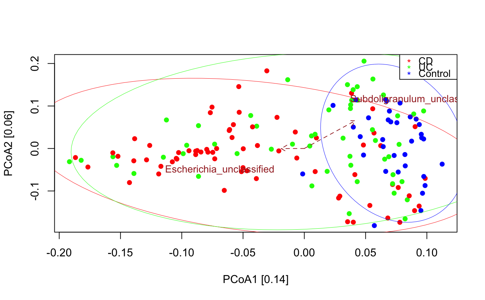
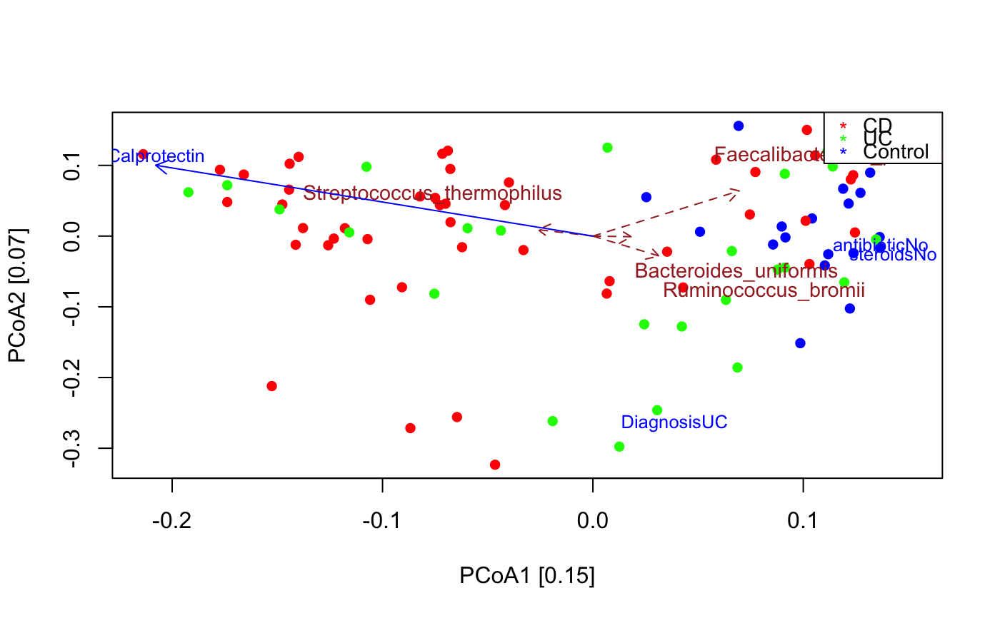

seqPCoA.RdA wrapper around various PCoA-based analyses implemented in vegan. The wrapper can handle groups and metadata. PCoA is carried out sample-wise. The na.action is set to na.omit, however envfit cannot deal with missing values, therefore if metadata are provided, they should be free of missing values.
seqPCoA(abundances, reference = NULL, rarefyRef = FALSE, addToRefStepwise = FALSE, refName = "ref", metadata = NULL, groupAttrib = "", groups = c(), groupColors = NULL, colors = c(), clusters = c(), labels = c(), sizes = c(), size.legend = "", time = c(), hiddenSamples = c(), dis = "bray", rda = FALSE, scale = FALSE, doScree = FALSE, topTaxa = 10, topMetadata = 10, arrowFactor = 0.5, metadataFactor = 1, centroidFactor = 1, taxonColor = "brown", metadataColor = "blue", drawEllipse = FALSE, clusterQualityIndex = "CH", groupDispersion = FALSE, xlim = NULL, ylim = NULL, permut = 1000, env.permut = 1000, pAdjMethod = "BH", qvalThreshold = 0.05, ellipseConf = 0.95, dimensions = c(1, 2), ...)
| abundances | a matrix with taxa as rows and samples as columns |
|---|---|
| reference | an optional reference data set on which abundances are mapped; data are merged by matching row names (nonmatching ones are kept as sum); cannot be combined with rda or topMetadata (topMetadata needs to be set to zero) |
| rarefyRef | rarefy abundance and reference samples to the minimum total count found in any of the samples; recommended when the total counts differ |
| addToRefStepwise | compute ordination coordinates for each sample added to the reference separately; cannot be combined with metadata, rda or drawEllipse |
| refName | group name for reference samples |
| metadata | an optional data frame with metadata items as columns, where samples are in the same order as in abundances and data types (factor vs numeric) are supposed to be correct; if provided and rda is FALSE, envfit is carried out |
| groupAttrib | optional: the name of a metadata item that refers to a vector that provides for each sample its group membership |
| groups | an optional vector that provides for each sample its group membership and which is overridden by groupAttrib, if provided |
| groupColors | an optional map of predefined colors for groups that matches names in groups (which should be strings); if reference is provided, refName is added if absent |
| colors | an optional vector of colors to be used to color samples; it overrides groupColors if provided |
| clusters | an optional vector that provides for each sample its cluster membership (cluster membership is visualized through shape, up to 10 different shapes are possible) |
| labels | an optional vector that provides for each sample a label to display |
| sizes | a vector of numeric values that will be displayed as varying sample sizes (sizes will be shifted into positive range if necessary and scaled between 0.5 and 2.5) |
| size.legend | a string displayed as a legend for size |
| time | an optional vector with as many time points as samples, adds arrows between consecutive time points (time points should be in ascending order) |
| hiddenSamples | an optional vector with indices of samples to be hidden (they will be taken into account for PCoA/RDA/envfit, but are not displayed) |
| dis | dissimilarity or distance supported by vegan's vegdist function (if set to cor, a PCA is carried out using vegan's function rda with scale set to true) |
| rda | carry out an RDA instead of a PCoA using vegan's capscale function |
| scale | scale numeric metadata (subtract the mean and divide by standard deviation) |
| doScree | do a Scree plot |
| topTaxa | if larger than zero: show the top N taxa most strongly covarying with principal components as arrows in the PCoA if they are significant according to a permutation test |
| topMetadata | if larger than zero, metadata provided and rda false: show the top N most significant numeric metadata as arrows and the top N most significant factor metadata as text in the PCoA |
| arrowFactor | the length of taxon arrows (determined by scaled covariance) is multiplied with this factor |
| metadataFactor | the length of numeric metadata arrows (determined by Pearson correlation) is multiplied with this factor |
| centroidFactor | centroid positions (representing categoric metadata) are multiplied with this factor |
| taxonColor | the color of the taxon arrows and text |
| metadataColor | the color of the metadata arrows and text |
| drawEllipse | if groups or groupAttrib given, draw polygons encapsulating groups using vegan's ordiellipse function (kind is sd, conf given via ellipseConf); print adonis R2 and p-value (permutation number given via env.permut) |
| clusterQualityIndex | if groups or groupAttrib given, report cluster quality according to any criterium supported by package clusterCrit (default: Calinski Harabasz, set to none to disable computation of cluster quality) |
| groupDispersion | if groups or groupAttrib given, report Tukey's HSD test on differences in group dispersions (avg distance of group members to centroid) and do boxplot (wraps vegan's betadisper) |
| xlim | range shown on the x axis, by default the minimum and maximum of the first selected component |
| ylim | range shown on the y axis, by default the minimum and maximum of the second selected component |
| permut | number of permutations for top-covarying taxa; if NA, NULL or smaller than 1, no permutation test is carried out |
| env.permut | number of permutations for envfit, if drawEllipse is true, for adonis |
| pAdjMethod | method for multiple testing correction supported by p.adjust for top-covarying taxon and envfit p-values |
| qvalThreshold | threshold on multiple-testing corrected top-covarying taxon and envfit p-values |
| ellipseConf | confidence limit for drawEllipse |
| dimensions | the principal components used for plotting, by default the first and second |
| \dots | Additional arguments passed to plot() |
When a reference and groups are provided and the number of group memberships does not equal the number of samples in the combined abundance table, groups are automatically extended such that reference samples are assigned to a single group with name refName, which is colored in gray. The color vector is likewise extended if provided. If a clusters, time and/or labels vector is provided together with a referene, it has to refer to both data sets. Samples in the abundance matrix are appended after the reference samples, so cluster memberships, time points and/or labels have to be provided in the same order. Different total counts in abundances and reference samples may bias the result, therefore rarefyRef allows to rarefy both to the same total count after matching. RarefyRef will rarefy all samples to the lowest total count found in any sample. Rows with zero counts after rarefaction are removed. When topTaxa is set larger zero, significant top-varying taxa are shown. The permutation test is carried out by shuffling the selected number of top-covarying taxa. Multiple testing correction on parameter-free p-values is then only applied to these top-covarying taxa. The strength of covariance is determined as the norm of the vectors resulting from multiplying the standardized eigen vectors with the taxa. In contrast, envfit p-values are computed for all metadata and multiple-testing correction is consequently applied to all metadata provided, though only the selected number of most significant metadata are shown. Thus, topTaxa ranks taxa by covariance with significance as a filter, whereas topMetadata ranks metadata by significance. The number in the axis label brackets refers to the proportion of variance explained as computed with vegan's eigenvals function. Note that ordination values in plots are not scaled (equivalent to plot.cca(scaling=0)). If groups are provided, drawEllipse can be enabled to draw ellipses with vegan's ordiellipse and to run vegan's adonis (PERMANOVA) to assess whether group composition differs significantly. Adonis is sensitive to differences in within-group variation. To assess whether within-group variation differs, betadisper can be carried out by enabling groupDispersion. In addition, if groups are provided, seqPCoA computes cluster quality indices to assess group separation with package clusterCrit. Concerning interpretation of cluster quality indices: The silhouette index ranges between -1 and 1, a large Dunn's, Silhouette or Calinski-Harabasz index and a small Davies-Bouldin or C-index indicate well-defined clusters, respectively.
data("ibd_taxa") data("ibd_metadata") ibd_metadata=assignMetadataTypes(ibd_metadata,categoric=c("SRA_metagenome_name","Diagnosis"))#> [1] "Metadata SRA_metagenome_name is categoric" #> [1] "Metadata Age is numeric" #> [1] "Metadata Diagnosis is categoric" #> [1] "Metadata Fecal.Calprotectin is numeric" #> [1] "Metadata antibiotic is binary" #> [1] "Metadata immunosuppressant is binary" #> [1] "Metadata mesalamine is binary" #> [1] "Metadata steroids is binary"#> [1] "Adonis to test for significant difference in group compositions" #> [1] "Adonis R2: 0.0604, p-value: 0.001" #> [1] "Cluster quality index Calinski_Harabasz" #> [1] 2.304452 #> [1] "Among the top 30 covarying taxa, 2 are significant." #> [1] "Subdoligranulum_unclassified" #> [1] "Escherichia_unclassified"# remove 65 samples with missing calprotectin measurements or other missing values in the metadata na.indices=unique(which(is.na(ibd_metadata),arr.ind=TRUE)[,1]) indices.to.keep=setdiff(1:nrow(ibd_metadata),na.indices) ibd_metadata=ibd_metadata[indices.to.keep,] ibd_taxa=ibd_taxa[,indices.to.keep] seqPCoA(ibd_taxa,metadata=ibd_metadata,groups=as.vector(ibd_metadata$Diagnosis),topTaxa=30)#> [1] "1 significant numeric metadata found, in order of significance:" #> [1] "Fecal.Calprotectin" #> [1] "4 significant categoric metadata found, in order of significance:" #> [1] "Diagnosis" #> [1] "antibiotic" #> [1] "immunosuppressant" #> [1] "steroids"#> [1] "Cluster quality index Calinski_Harabasz" #> [1] 1.796474 #> [1] "Among the top 30 covarying taxa, 3 are significant." #> [1] "Faecalibacterium_prausnitzii" #> [1] "Ruminococcus_bromii" #> [1] "Bacteroides_uniformis"